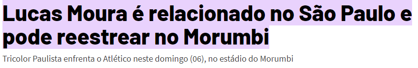
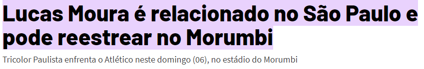
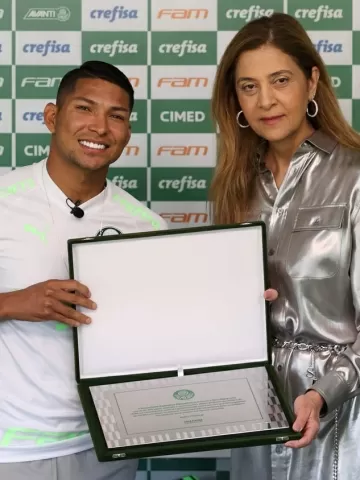
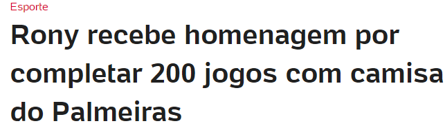
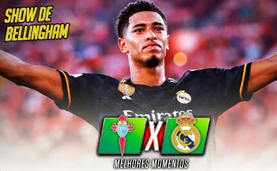
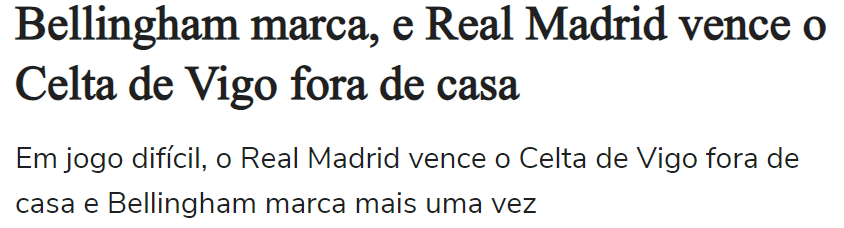

LUCAS MOURA É APRESENTADO NO SÃO PAULO E VAI VESTIR A CAMISA 7
 >Lucas Moura, formado em Cotia, está de volta ao São Paulo. Nesta sexta-feira (4), o atacante foi oficialmente apresentado pelo clube e recebeu com emoção a camisa 7, antes utilizada por Alisson. Após suas passagens por PSG e Tottenham, o jogador celebrou a oportunidade de “voltar para casa” e expressou grande ansiedade para sua estreia com a camisa tricolor.
>Lucas Moura, formado em Cotia, está de volta ao São Paulo. Nesta sexta-feira (4), o atacante foi oficialmente apresentado pelo clube e recebeu com emoção a camisa 7, antes utilizada por Alisson. Após suas passagens por PSG e Tottenham, o jogador celebrou a oportunidade de “voltar para casa” e expressou grande ansiedade para sua estreia com a camisa tricolor.
A razão da importância de Róger Guedes para o time de Vanderlei Luxemburgo, a diretoria do Corinthians tentou adiar a ida do atacante ao seu novo clube após o jogo de volta da semifinal da Copa do Brasil.
No entanto, Al-Rayyan tem pressa para contar com o jogador e pediu a ida dele em imediato.
Números de Róger Guedes pelo Corinthians
No Corinthians desde agosto de 2021, Róger Guedes vestiu a camisa do Timão em 126 jogos e marcou 43 gols.
Aliás, foram 31 gols na Neo Química Arena, assumindo o posto de maior artilheiro do estádio corintiano. Nesta temporada, o atacante é o artilheiro do Corinthians, com 21 gols.
>  
O atacante Rony recebeu das mãos da presidente Leila Pereira uma placa e uma camisa em alusão aos 200 duelos do camisa 10 alviverde, marca alcançada contra o Atlético-MG, na última quarta-feira (09), pela CONMEBOL Libertadores.
 
O Real Madrid bateu o Celta de Vigo, nesta sexta-feira, pela Rodada 03 de La Liga. No Estádio Balaídos, a equipe merengue saiu vencedora após jogo dificílimo contra a equipe da casa.
O gol da partida foi marcado pela estrela do time até o momento na temporada, Jude Bellingham. Já são 4 gols em 3 jogos com a camisa madridista.
JORGE SAMPAOLI SERÁ DISPENSADO AO FIM DA TEMPORADA 2023
Depois de ter começado a temporada 2023 sob o comando de Vítor Pereira, o Flamengo demitiu o português para contratar Jorge Sampaoli. Apesar do investimento no argentino, a contratação não deu certo e o Rubro-Negro seguiu acumulando vexames e eliminações.
Segundo informações divulgadas pelo jornalista Venê Casagrande, o treinador Jorge Sampaoli não faz parte dos planos da diretoria do Flamengo para 2024. Desse modo, o técnico argentino não seguirá no comando do clube ao fim da temporada.
A ÚLTIMA COPA DA RAINHA: A MELHOR JOGADORA DE TODOS OS TEMPOS!
Em 6 anos, a menina do sertão alagoano se torna a melhor do mundo; hoje protagoniza a luta por igualdade no futebol
"Rainha do futebol", a melhor jogadora da história, Marta Vieira da Silva estreia na próxima segunda-feira (24) a sua sexta e última Copa do Mundo. Aos 37 anos, acumula recordes. Eleita pela Fifa a melhor jogadora do mundo por seis vezes, sendo cinco consecutivas, é a maior artilheira da seleção brasileira - masculina e feminina.
--------------------------------CONTATO--------------------------------
----------------------------------------------------------------